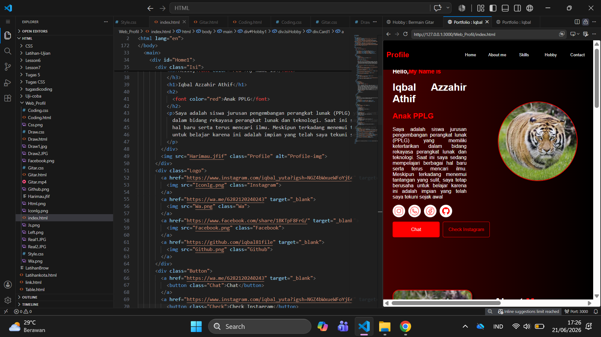
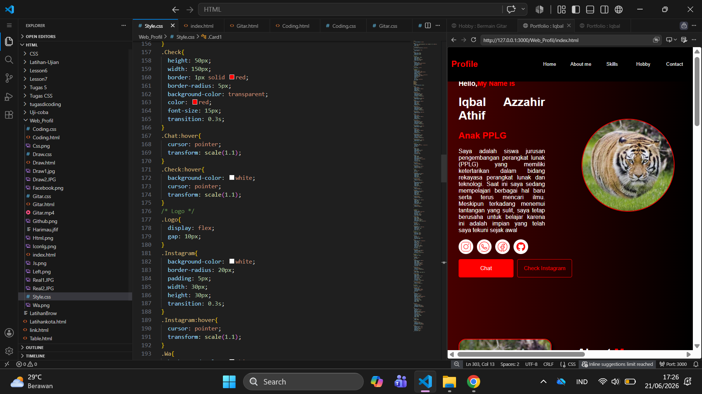

Saya mulai mengenal dunia coding sebelum masuk SMK, waktu itu masih sangat dasar dan baru sebatas belajar HTML.
Setelah masuk SMK dan mengambil jurusan PPLG, saya mulai belajar lebih jauh, terutama tiga bahasa dasar untuk
membangun website, yaitu HTML, CSS dan Java Script
Saat ini saya masih dalam tahap belajar dan terus mencoba memahami bagaimana ketiga bahasa tersebut bekerja sama
untuk membanguan sebuah halaman website, mulai dari struktur,tampilan, hingga interaksi sederhana di dalamnya.
Salah satu project nyata yang sudah saya buat dengan ilmu yang saya pelajari adalah website profile ini sendiri
Untuk ke depannya, saya belum punya rencana yang terlalu spesifik soal mau belajar apa lagi. Untuk sekarang, saya lebih
memilih untuk fokus memperdalam dan memperkuat dasa-dasar yang sudah saya pelajari terlebih dahulu sebelum melangkah ke
hal yang lebih jauh. Berikut beberapa screenshot codingan dari project profile ini:

